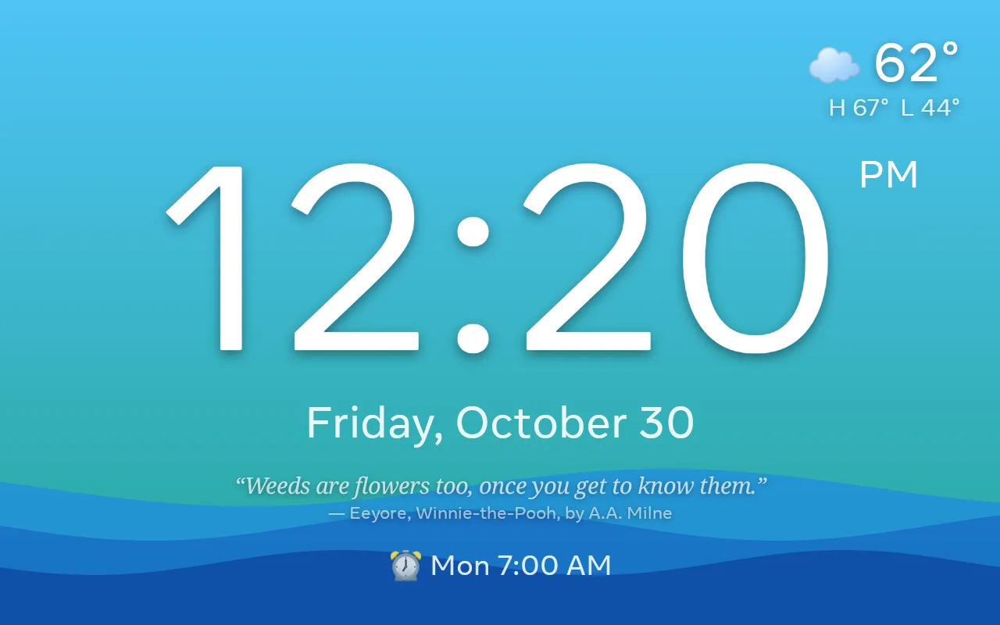
What it does
- Two-stage mornings. A chosen number of minutes before the alarm, a soft sound plays once, the screen brightens with a green okay-to-wake lamp and the morning's quote appears. Saying "I'm awake" or tapping the button cancels that day's alarm. Otherwise the real alarm rings, ramping up over half a minute.
- Sounds tuned to the research on waking. Five alarm sounds and five gentle sounds, all synthesized in code: hummable melodies around C5 at 112 BPM rather than mechanical beeps, with a music box, wind chimes, birdsong, a kalimba and a harp for the gentle side. Each has its own volume and a Play button to audition it.
- Night mode from 8:30 pm to 6:30 am by default: amber digits on black, the screen dimmed as far as it goes, a red moon that turns into a green sun when it is okay to get up. An Always night switch keeps the amber-on-black colours all day at normal brightness.
- Voice without a cloud. "Snooze", "stop" and "I'm awake" are recognised on the device by Vosk. The microphone opens only while an alarm is ringing or a gentle wake-up is in progress, and the camera is never requested at all.
- Nine backgrounds to swipe between: Sky, Ocean, Rainbow, Galaxy, Fireflies, Aurora, Meadow, Doodle Strings (beaded pink strings hung with hearts doodled in a dozen marker styles, swaying) and Notebook (a ruled page covered in doodled hearts).
- Eleven looks for the time itself, chosen separately from the background. Hold the time for two seconds and a ring fills under your finger; then swipe sideways through Classic, Bold, Stacked, a real Analog dial for learning to read a clock, Sketch (marker on a paper scrap), Whacky (every digit a different font and tilt), Pixel, Magnets, Tiara (slim serif digits in champagne rose with a fine tiara on the hour), Marker (Caveat digits with a scribbled pink underline) and Marker Stacked (the stacked layout in pink marker with doodled tiaras), and tap to keep one. Every look has an amber night version.
- Holiday designs. New Year's Eve, Valentine's Day, St. Patrick's Day, Easter, the Fourth of July, Halloween, Thanksgiving and Christmas each have their own background and lettering, from a witch hat on the hour to a string of fairy lights. Each appears by itself three days before the holiday and goes away the day after, giving the chosen design back. Swiping to another background or look in the meantime counts as a decision and keeps that choice. A switch in Settings turns the whole thing off.
- A quote a day, six actually. From a library of 260 quotes and bits of advice picked for a bright eleven-year-old, six are drawn each morning; tap the quote to see the next one.
- Weather from Open-Meteo with no key, including a 12-hour and 6-day view on double-tap. It is the only thing in the app that uses the network, and when the network goes away the clock carries on and the forecast quietly disappears rather than going stale.
- Settings behind a two-second hold on the top-right corner, so stray taps never land in them. Tap the next-alarm line for a plain-language card about that alarm.
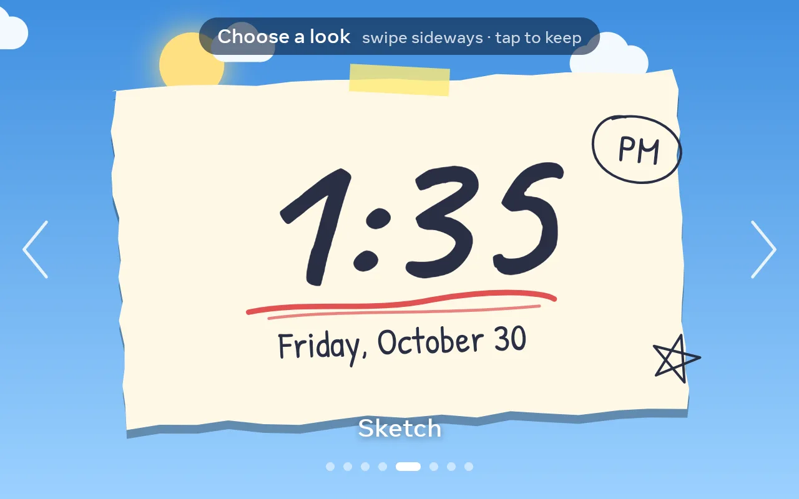
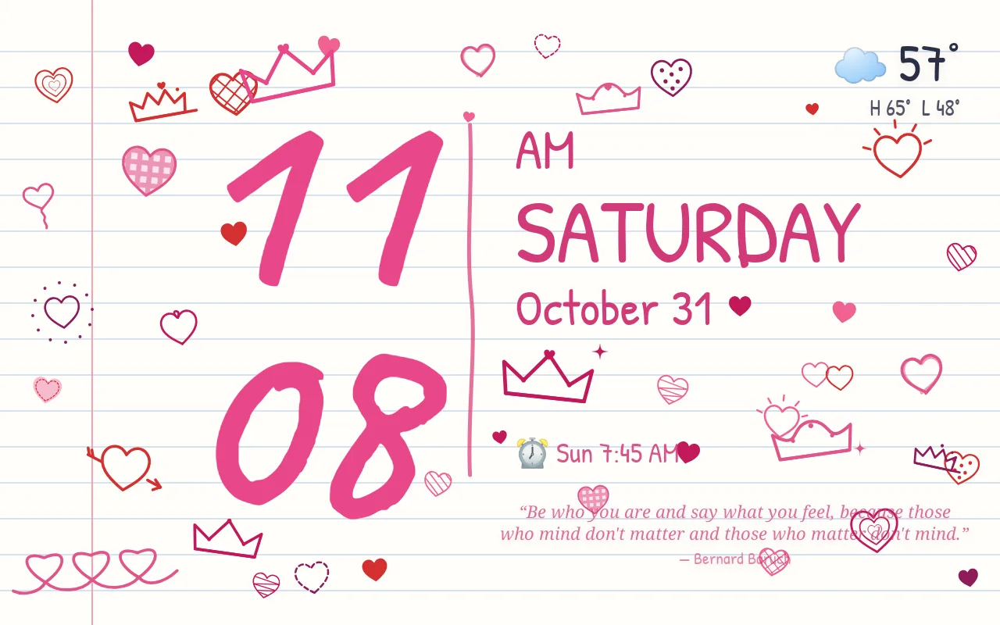
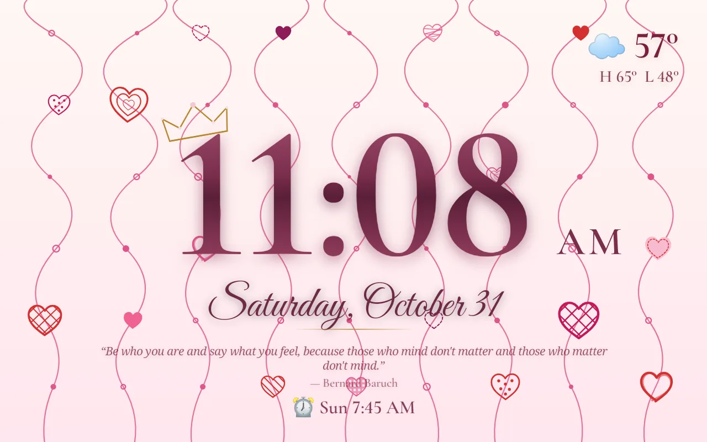
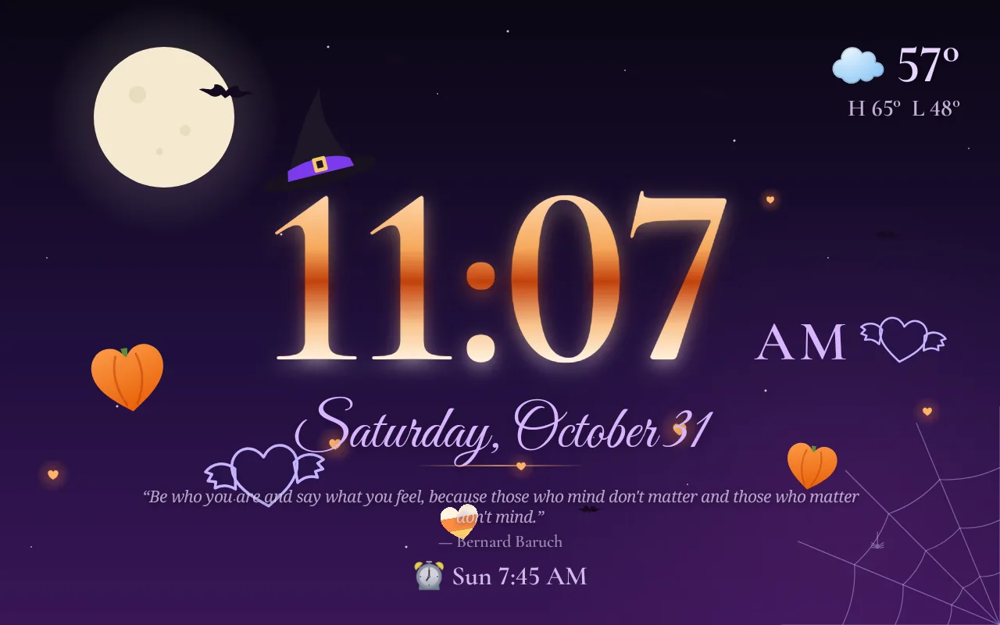
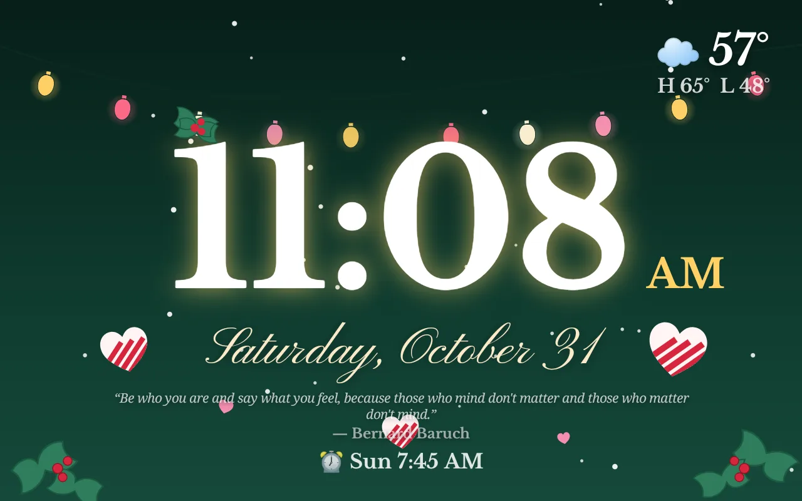

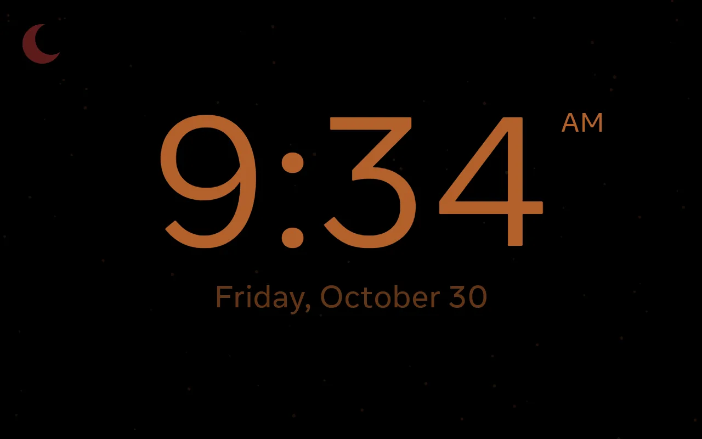
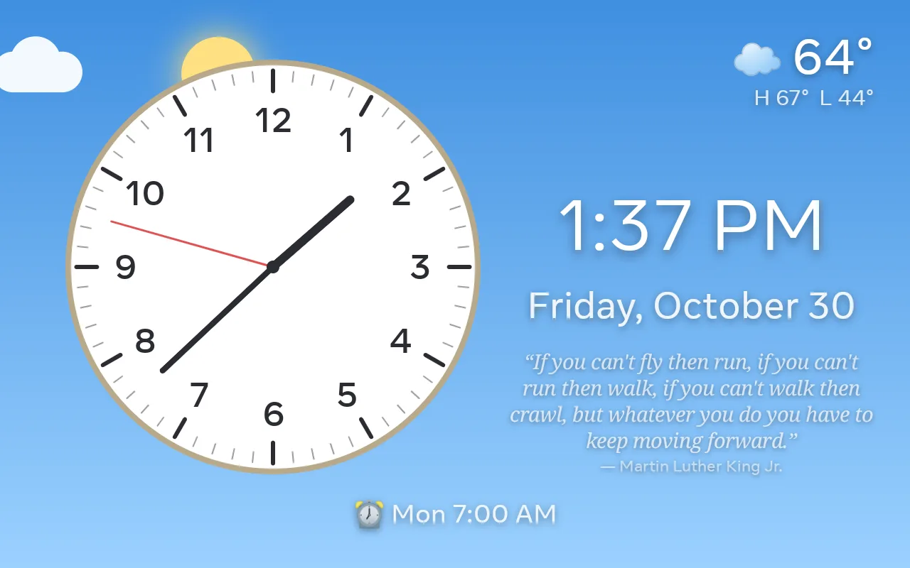
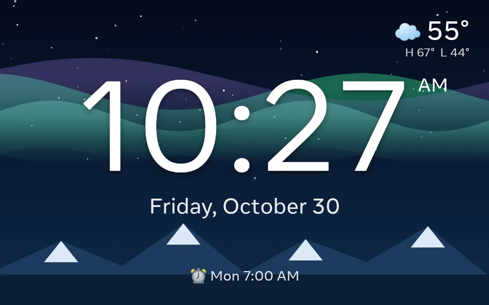
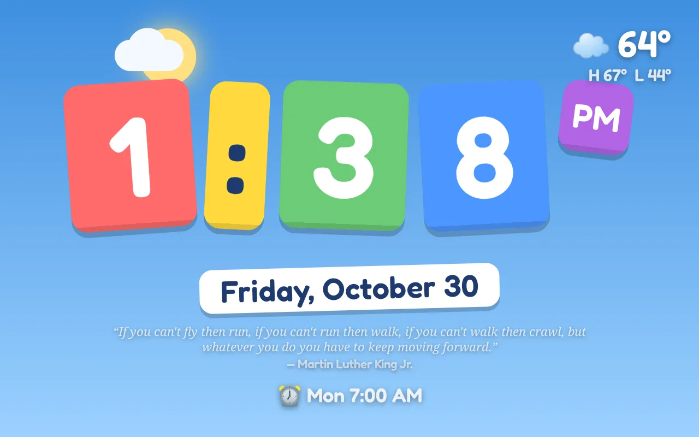
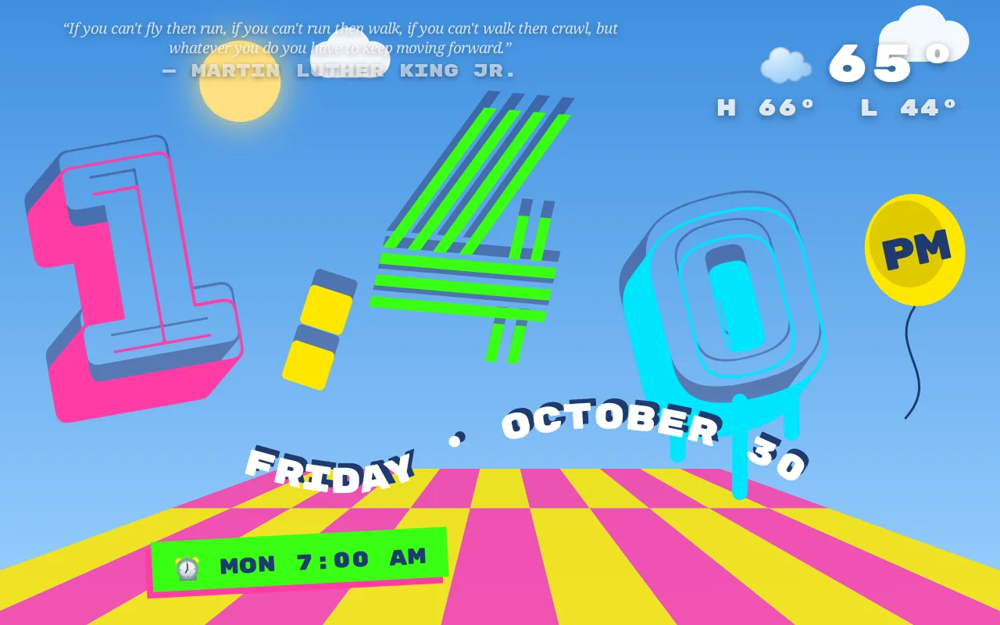
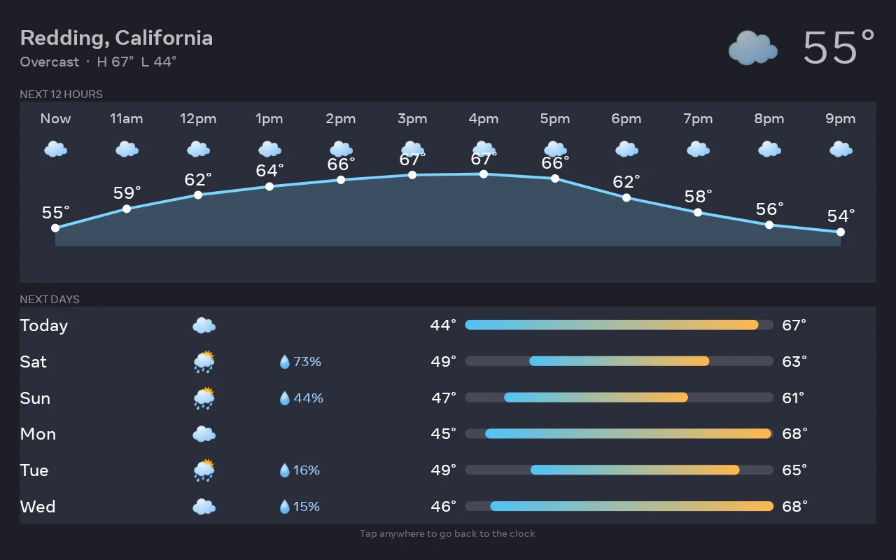
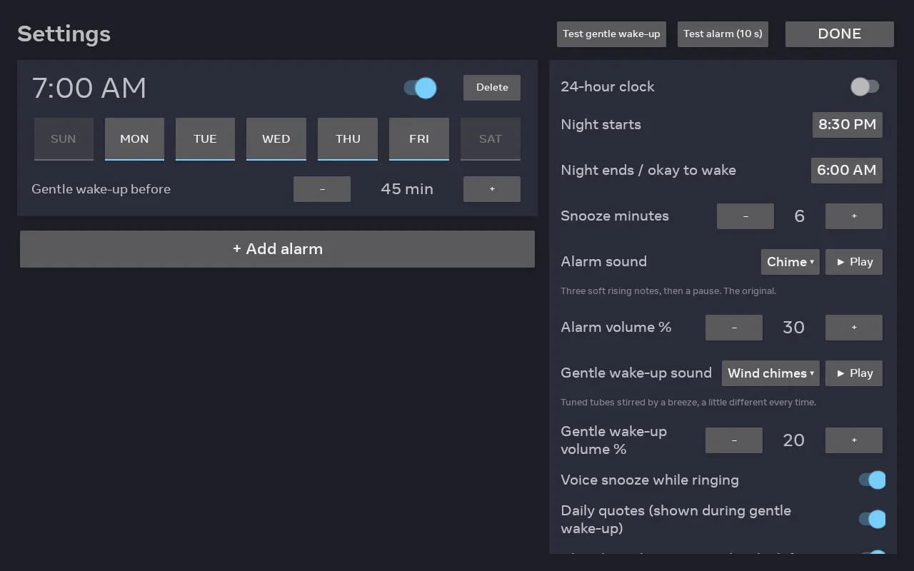
How to install
You need a Portal that has been through unmetaportal, so that it runs ordinary Android apps and you can reach it with adb, and a computer with the Android platform tools. Nothing here needs root, and nothing is irreversible: unmetaportal's disable script puts the launcher back.
- Download
kidclock-<version>.apkfrom the latest release. - Install it and grant the microphone:
adb install -r -g kidclock-0.3.apk adb shell pm grant com.acechase.kidclock android.permission.RECORD_AUDIO
- Make it the home screen and lock it in:
~/unmetaportal/tools/portal-kiosk-enable.sh \ --component com.acechase.kidclock/.ClockActivity --set-home --yes adb shell dumpsys deviceidle whitelist +com.acechase.kidclock
- Hold the top-right corner of the clock for two seconds to open Settings. Add an alarm, choose sounds and volumes, set the weather location, then unplug the cable. The clock comes back on its own after a power cut or reboot.
- Swipe to pick a background. Hold the time for two seconds, then swipe, to pick a look. Holiday designs take over by themselves for a few days around each holiday.
The APK is about 80 MB because it bundles the offline speech model. It is signed with an Android debug key, so to replace it with a build of your own you uninstall first or build with the same keystore.
Make it your own
The repository is MIT licensed and small: Kotlin, no Play Services, no third-party UI libraries. Backgrounds and looks are single Canvas classes each, sounds are a few dozen lines of additive synthesis each, and the quote library is one JSON file. The README covers building, deploying and the handful of device quirks worth knowing. A JDK 17 and an Android SDK are all it takes.
Privacy
No accounts, no analytics, no camera permission. The microphone is used only while an alarm is ringing or a gentle wake-up is in progress, speech is recognised on the device and nothing is recorded. The only network traffic is an optional weather forecast from Open-Meteo for a location you type in (or, until you do, a coarse guess from your IP address).